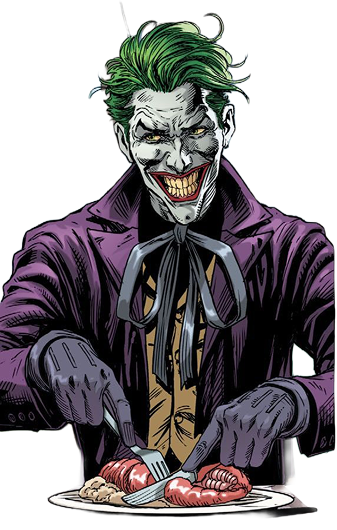
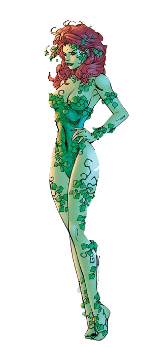

The Gallery
Batman’s rogues gallery is a reflection of his own fractured psyche — a mirror held up to the man beneath the mask. Each villain embodies a piece of what Batman could become if he ever lost control: the Joker’s chaos, Two-Face’s duality, the Riddler’s obsession, and Poison Ivy’s moral conviction twisted by vengeance. Together, they form a living symbol of Gotham’s corruption and the darkness Bruce fights within himself. In battling them, Batman isn’t just saving his city — he’s constantly fighting the parts of his soul that threaten to consume him.
Joker
Joker – First appeared in Batman #1 (April 1940). Batman’s archenemy and chaotic mastermind, Joker thrives on terror, psychological manipulation, and murder. Their dynamic is one of personal and ideological opposition, with Joker representing pure chaos to Batman’s order.
The Riddler

Edward Nigma (Riddler) – First appeared in Detective Comics #140 (October 1948). The Riddler is obsessed with intellectual superiority, using puzzles and schemes to challenge Batman. His compulsive need to prove himself makes him a persistent cerebral threat.
Poison Ivy
Pamela Isley (Poison Ivy) – First appeared in Batman #181 (June 1966). Ivy is a botanist turned eco-terrorist with plant control powers. Driven by environmental ideology, she is a morally complex adversary whose charisma and botanical expertise challenge Batman physically and ethically.
Penguin

Oswald Cobblepot (Penguin) – First appeared in Detective Comics #58 (December 1941). Gotham’s crime lord, Penguin combines social sophistication, wealth, and underworld influence. His strategic mind and ruthless cunning make him a constant threat to the city, often forcing Batman to navigate criminal enterprise as carefully as street-level crime.
Batman's Mission
For Batman, fighting crime is more than a mission — it is the defining act of his existence. The vow he made as a child, standing in the bloodstained alley where his parents died, became the heartbeat of his entire life. What began as vengeance has evolved into something far greater: a relentless pursuit of justice in a city that has almost forgotten what justice means. Every night, when he puts on the cowl, Bruce Wayne disappears and the Batman emerges — not to seek revenge, but to make sense of his pain, to turn tragedy into purpose. Gotham’s darkness mirrors his own, and in saving it, he tries to save himself.
Yet Batman’s war is not one he expects to win. He knows that crime will never end, that his crusade will outlive him. Still, he fights because every life saved, every criminal stopped, is a small victory against the chaos that defined his past. The Bat symbol is more than fear — it is a promise: that even in the most corrupt, broken city, one person’s will can hold back the darkness. For Bruce, fighting crime is not about glory or redemption. It is an endless act of defiance — proof that, no matter how deep the night, he will never stop standing between Gotham and the abyss.